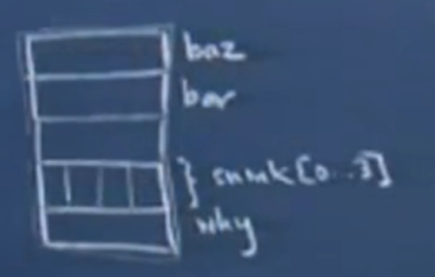
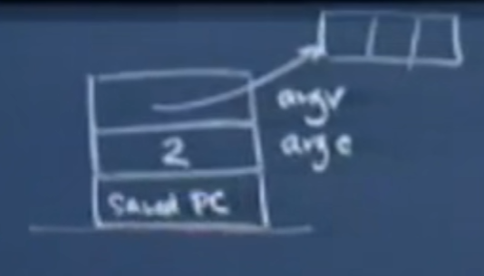
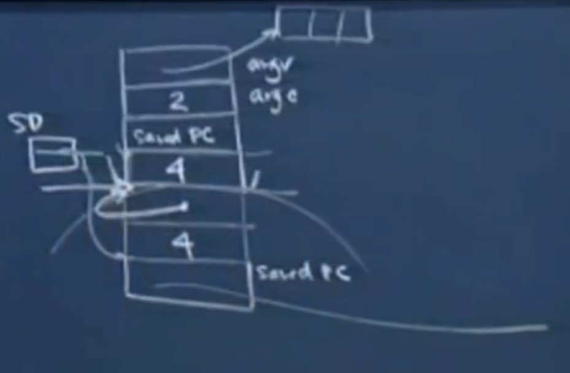
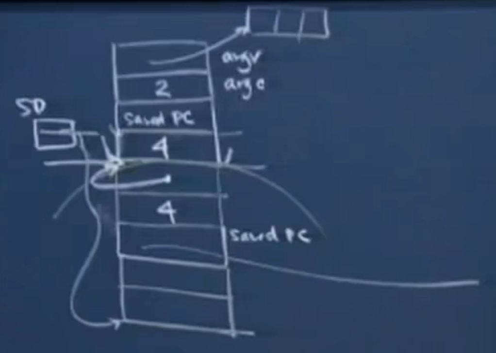
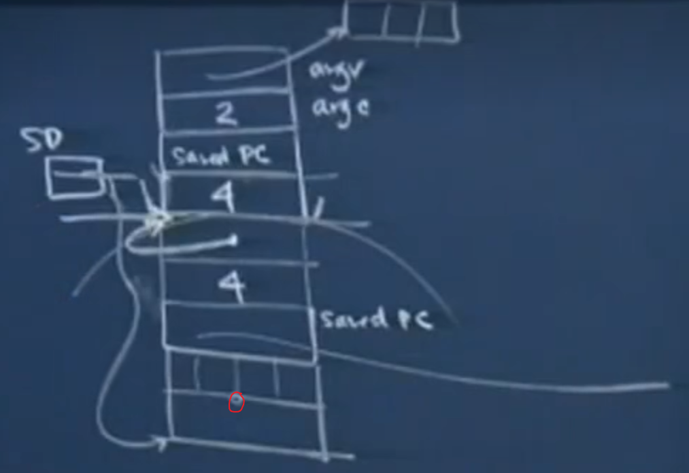
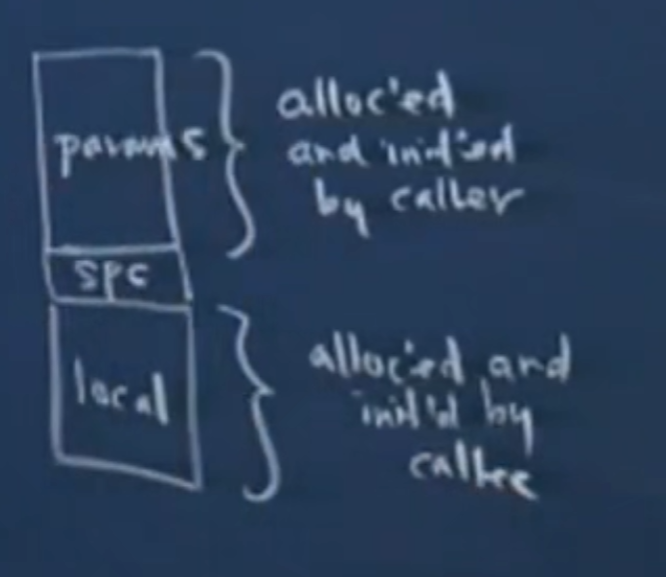

# 斯坦福编程范式 CS107_10
# 考虑完整的函数 (带有参数)
考虑申请一个如下的函数：
void foo(int bar,int *baz){ | |
char snink[4]; | |
short *why; | |
} |
函数的传入变量和函数体内声明的局部变量在内存空间中是很近的。参数和局部变量的内存空间之间用了 4 字节进行分割，并且参数从右往左是从高地址到低地址的，所以 baz 的地址在 bar 之上。中间的四字节也十分重要，其中存储着调用函数的某些信息，它会告知我们是哪块代码调用了 foo 。

考虑使用 main 函数进行案例：
int main(int argc,char **argv){ | |
int i =4; | |
foo(i,&i); | |
return 0; | |
} |
当运行 main 函数时，我们将会演示整个内存空间是如何变化的。首先是 main 函数本身，具有两个参数 argc 和 argv，并且有一个 saved PC 的四字节空间

接着对 i 进行初始化，并赋值为 4 。
此时汇编代码如下所示，SP 是一个特殊的寄存器，为 stack pointer 它总是指向栈的最低地址。
SP = SP - 4;
M[SP] = 4;
接着开始调用 foo 函数，下面的汇编代码将 i 以及 i 的地址 作为参数传入预留给 foo 函数的参数空间中，并将控制权移交给 foo 。CALL 类似于一个跳转命令，它会跳转到 foo 函数的汇编代码中，并在其执行结束后再跳转回 main 中。
SP 最后会加 8，这部分内容 (SP = SP + 8) 也会被存储到 saved PC 中，这部分操作实际上是在执行 CALL 函数后自动进行的。当 foo 函数执行完毕后，它能根据记录的信息跳回到调用之前的地址。
SP = SP - 8;
R1 = M[SP + 8];
R2 = SP + 8;
M[SP] = R1;
M[SP + 4] = R2;
CALL <foo>;
SP = SP + 8;

随后我们开始执行 foo 函数中的代码。假设 foo 函数如下：
<foo>:
void foo(int bar,int *baz){ | |
char snink[4]; | |
short *why; | |
why = (short *)(snink + 2); | |
*why = 50; | |
} |
foo 首先为变量分配空间
汇编代码如下所示：
SP = SP - 8;

随后执行
why = (short *)(snink + 2); |
也就是认为一个 short 类型的地址 why 被赋为从图中圈圈的地方开始的地址。

汇编代码：
R1 = SP + 6;
M[SP] = R1;
接着执行
*why = 50; |
汇编代码：
R1 = M[SP];
M[R1] = .2 50;
现在 foo 函数中的内容执行完毕，现在函数应该退出并且以某种方式返回到 main 函数中，即执行下面的汇编代码。SP + 8 意思是将申请的局部空间释放掉，SP 回到申请局部变量空间前的位置。执行 RET 的时候，会让 saved PC 中的内容取出来，并读入 PC 中以便跳回到 main 函数中，并让 SP + 4。
SP = SP + 8;
RET;
现在在 main 函数中，走到了汇编代码的这个位置。接着执行 RV = 0 即 return 0；
CALL <foo>;
--> SP = SP + 8;
RV = 0;
# 举一个一般活动过程的例子
第一部分是函数的参数，被函数的调用者，比如 main 函数初始化并预留空间；第二部分是 saved PC；第三部分是 函数的局部变量，是被调用的函数自己初始化并预留的空间。

为什么要这样呢？为什么不直接由 main 函数预留这些空间？或者由被调用函数预留这些空间？因为谁申请的空间谁就要负责为这些空间进行赋值。所以参数部分只能由调用者进行初始化，局部变量只能由被调用的函数进行初始化。
# 举一个更有意义的函数的例子
函数 factorial 如下所示
int fa(int n){ | |
if(n == 0) | |
return 1; | |
return n * fa(n-1); | |
} |
函数的汇编代码如下所示
R1 = M[SP + 4];
BNE R1,0,PC+12; //如果n不为0则进行跳转，否则按顺序执行
RV = 1; //return 1
RET; //返回到被调用前的位置
R1 = M[SP+4];
R1 = R1 - 1; // 先得到 n - 1 的值
SP = SP - 4; //
M[SP] = R1; // 将n - 1 存放到空间中，作为下一个调用函数的参数
CALL<fa>;
SP = SP + 4; // 调用的函数返回后，释放掉参数的空间
R1 = M[SP + 4];
RV = RV * R1; // return n * RV
RET;
这段例子在这节课的 42 分钟 开始有一个幻灯片例子，很清晰。